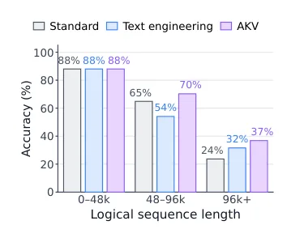
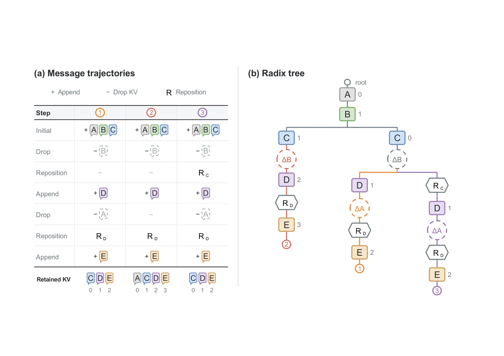
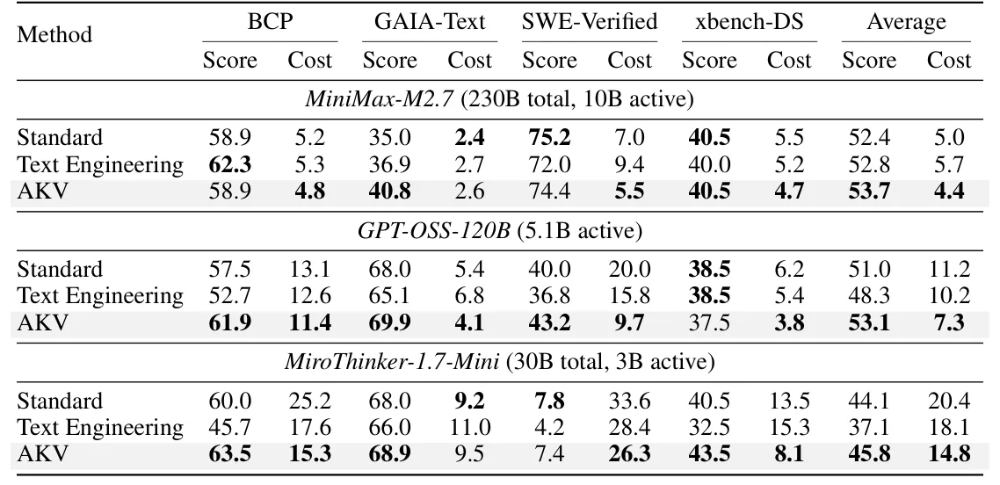
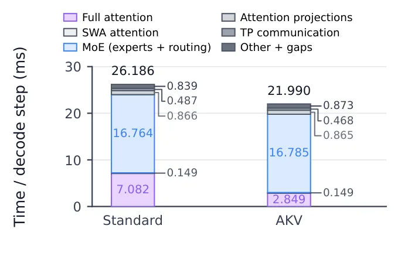

O problema do crescimento exponencial em agentes LLM
Agentes baseados em Grandes Modelos de Linguagem (LLMs) estão evoluindo para tarefas de horizonte longo, envolvendo centenas de rodadas de raciocínio, chamada de ferramentas e interação com o ambiente. À medida que essas trajetórias crescem, o custo de inferência não é mais dominado apenas pela computação, mas pelo I/O e armazenamento do Key-Value (KV) cache. O KV cache armazena os estados intermediários de atenção para acelerar a geração de tokens subsequentes, mas retê-los integralmente consome memória e largura de banda significativas.
Estudos preliminares indicam que a leitura do KV cache pode representar mais de 80% do custo total de API em sistemas de agentes. Além disso, há um limite físico: se o contexto exceder o comprimento máximo suportado pelo modelo, a precisão cai drasticamente. A solução padrão, conhecida como 'context engineering', tenta resolver isso resumindo ou cortando mensagens antigas do texto. No entanto, essa abordagem tem um defeito estrutural grave.
Quando você modifica o prefixo do texto (removendo ou resumindo mensagens), os estados de KV cache calculados para as mensagens subsequentes tornam-se inválidos. O sistema é forçado a realizar um 're-prefill', recalculando o cache para todo o contexto retido. Quanto mais cedo a edição ocorre na trajetória, maior é a porção de texto que precisa ser recalculada. Isso cria um dilema: resumir agressivamente para economizar cache aumenta o custo de re-prefill e pode degradar a precisão da tarefa ao perder informações contextuais importantes.

Engenharia de Cache: O conceito central
O paper introduz a 'cache engineering', uma proposta para permitir que agentes controlem diretamente seu cache KV ativo sem modificar a trajetória de texto subjacente. A ideia é separar a representação textual da representação computacional. O agente pode escolher proativamente quais entradas de cache devem ser excluídas da atenção futura, mantendo o texto original intacto para referência humana ou lógica de negócios.
Para viabilizar isso, os autores definem duas operações de cache além do append padrão (adicionar novos tokens): Drop e Repos. A operação 'Drop' remove seletivamente entradas de KV do cálculo de atenção futuro. Isso significa que o modelo ignora essas informações durante a inferência, mas o cache correspondente não precisa ser recalculado. A operação 'Repos' ajusta as posições codificadas nas chaves (keys) retidas. Como o Drop altera a sequência lógica de tokens, o Repos garante que as posições relativas continuem corretas para os tokens restantes.
Essa abordagem permite que o agente descarte incrementalmente caches antigos de ferramentas ou respostas irrelevantes enquanto mantém o suffix (parte final) do contexto. Diferente do context engineering, que espera atingir um limite de comprimento para cortar tudo de uma vez, o cache engineering oferece controle granular e contínuo, otimizando o uso de memória e computação em tempo real.
Arquitetura do sistema AKV
Para suportar essa nova forma de gerenciamento, os autores co-projetaram o motor de serving AKV. O desafio técnico principal é que, ao aplicar operações de cache, o estado do sistema torna-se dependente do histórico de operações. Um mesmo prefixo de texto pode ter diferentes versões de cache ativas. O AKV resolve isso usando uma árvore radix estendida para rastrear todas as operações de cache (append, drop, repos) aplicadas a cada mensagem.
Essa estrutura permite que o sistema gerencie a reutilização, evicção e restauração do cache de forma eficiente. A interface exposta ao agente é stateless (sem estado), compatível com APIs de serving existentes, mas internamente o AKV mantém o estado necessário para garantir que o cache seja reaproveitado corretamente mesmo quando as trajetórias divergem ou se recombinam. Isso é crucial para a escalabilidade em ambientes de produção com múltiplas requisições concorrentes.
Além da estrutura de dados, o AKV implementa segment-batch attention. Isso permite que o modelo processe apenas os segmentos de cache que foram retidos, ignorando os descartados, reduzindo o tempo de computação da atenção completa. O sistema também suporta 'recursive self-improvement' (RSI), onde os próprios agentes podem buscar, avaliar e refinar suas estratégias de cache ao longo do tempo.

Políticas de descarte e Auto-Ajuste
O paper não define uma única política de cache, mas explora estratégias como 'tool-response rolling-drop'. Em vez de resumir todo o histórico quando um limite é atingido, essa política remove incrementalmente as respostas de ferramentas mais antigas. Isso preserva o contexto de raciocínio recente, que é geralmente mais crítico para a precisão da tarefa.
Os autores também investigam a aplicação de RSI para otimizar essas políticas. Ao permitir que o agente ajuste dinamicamente quais caches descartar com base no desempenho observado, é possível reduzir ainda mais os custos. Em experimentos, o RSI reduziu os custos em 7,1% adicionais em comparação com políticas projetadas por especialistas, demonstrando que o cache engineering pode ser um espaço de busca ativo para otimização de agentes.
A flexibilidade do Drop e Repos permite combinar estratégias. Por exemplo, é possível aplicar Drop apenas em respostas de ferramentas (que são frequentemente ruidosas ou irrelevantes) enquanto mantém o histórico de raciocínio, ou aplicar ambos. A ablação mostra que a combinação de Drop e Repos é essencial para manter a precisão, pois o Repos corrige as posições que seriam deslocadas pelo Drop.
Resultados de Desempenho e Precisão
Os experimentos foram conduzidos em benchmarks agênticos como BCP, GAIA-Text e SWE-Verified, utilizando modelos como GPT-OSS-120B e MiniMax-M2.7. Os resultados mostram que o AKV supera consistentemente o 'Text Engineering' (context engineering tradicional) em termos de custo e precisão. Em média, a política de rolling-drop com AKV melhorou as pontuações dos benchmarks em 1,7 pontos e reduziu o custo em 27,7%.
Um ponto crítico é a manutenção da precisão em sequências longas. Enquanto o Text Engineering sofre degradação significativa à medida que o contexto cresce (devido à perda de informação no resumo), o AKV mantém a acurácia estável. Isso ocorre porque o Drop remove apenas o ruído computacional, sem alterar a informação semântica retida no cache. A tabela de resultados destaca que, em tarefas complexas de programação (SWE-Verified), o AKV alcança taxas de passagem superiores com custos significativamente menores.
A eficiência de serving também melhora drasticamente. O AKV alcança até 1,5x mais throughput de saída e uma speedup de 1,5x na latência P95 (tempo para 95% das requisições) em comparação com o método padrão. Essa melhoria é atribuída principalmente à redução do tempo de atenção, já que o modelo não precisa processar tokens cujo cache foi descartado. A latência de entrada (TTFT) também cai, pois o sistema evita o custo de re-prefill.

Análise de Latência e Throughput
A tabela de desempenho detalhada mostra que as vantagens do AKV se ampliam em níveis de concorrência mais altos. Em ambientes com alta demanda, o sistema padrão sofre com a pressão do cache, resultando em maior latência e menor throughput. O AKV, ao reduzir a carga de I/O e computação de atenção, consegue manter um desempenho estável.
A decomposição da latência revela que a maior economia vem da redução do tempo de decode-step. Ao encurtar o contexto ativo, o número de leituras de KV e as operações de atenção diminuem proporcionalmente. Isso resulta em um throughput de entrada e saída superior, com ganhos de 1,53x e 1,18x, respectivamente, em relação ao método padrão. Esses números são particularmente relevantes para aplicações em tempo real, onde a latência P95 é um indicador crítico de qualidade.
Em avaliações online com tarefas reais de SWE-bench, o AKV alcançou a maior taxa de sucesso final em menos tempo de GPU. Isso demonstra que a eficiência computacional não veio à custa da qualidade do resultado, mas sim da eliminação de trabalho redundante. O sistema consegue entregar mais respostas corretas com menos recursos, um objetivo fundamental para a escalabilidade de agentes LLM.

Limitações e Trabalho Futuro
Apesar dos resultados promissores, os autores destacam limitações. O paper foca em modelos com atenção completa (full-attention). Estender o suporte para modelos com atenção linear ou outras arquiteturas eficientes requer adaptações adicionais na estrutura do AKV. Além disso, a estratégia de cache engineering ainda depende de heurísticas ou do próprio agente para decidir quando dropar; um treinamento específico para essa tarefa poderia otimizar ainda mais as decisões.
Outra área de exploração é a integração do cache engineering em pipelines de fine-tuning. Atualmente, o método é aplicado durante o serving, mas seria interessante investigar se modelos podem ser treinados para operar de forma nativa com caches parciais ou descartados. Isso poderia levar a arquiteturas onde a 'memória' do modelo é intrinsecamente mais eficiente.
Finalmente, a complexidade adicional introduzida pela árvore radix e pelo gerenciamento de estado pode representar uma sobrecarga de código para sistemas existentes. A compatibilidade com APIs stateless ajuda, mas a implementação do AKV exige uma mudança na infraestrutura de serving. A comunidade precisará avaliar se o ganho de custo e latência justifica a migração para esse novo paradigma de gerenciamento de cache.
Conclusão
O paper apresenta uma mudança de paradigma na otimização de agentes LLM: sair da manipulação de texto para a manipulação direta de cache. A engenharia de cache, suportada pelo sistema AKV, oferece uma solução elegante para o dilema entre custo de re-prefill e precisão em trajetórias longas. Ao permitir que agentes controlem seu estado de atenção sem alterar o histórico textual, é possível alcançar economias significativas de custo e latência sem comprometer a qualidade da tarefa.
Os resultados empíricos validam a abordagem, mostrando melhorias consistentes em benchmarks agênticos. Para desenvolvedores e cientistas de dados que trabalham com agentes de longa duração, o cache engineering surge como uma ferramenta essencial para escalar a inferência de forma sustentável. O código aberto do AKV convida a comunidade a explorar e expandir essas ideias.
O que fica
- A engenharia de contexto tradicional exige re-prefill ao resumir texto, gerando latência. O novo método manipula o cache diretamente.
- As operações 'drop' e 'repos' permitem ignorar partes do histórico sem alterar o texto ou recalcular o prefixo.
- O sistema AKV gerencia o estado do cache com uma árvore radix, resolvendo a dependência de histórico.
- Resultados mostram redução de 27,7% no custo e aumento de 1,5x na velocidade de resposta (P95) sem perda de acurácia.
Paper original: Cache Engineering for Agents
Comentários
Nenhum comentário ainda. Seja o primeiro.